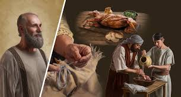

고기도 먹지 않고 포도주도 마시지 않고 형제를 걸려 넘어지게 하는 어떤 일도 하지 않는 것이 좋습니다. - 로마 14:21.
1세기 로마 회중에는 유대인 그리스도인들과 이방인 그리스도인들이 있었습니다. 모세 율법이 폐지되면서 그들은 특성 음식을 먹지 말라는 규정을 더는 지킬 필요가 없었습니다. (마가 7:19) 그 이후로 일부 유대인 그리스도인 
1세기 로마 회중에는 유대인 그리스도인들과 이방인 그리스도인들이 있었습니다. 모세 율법이 폐지되면서 그들은 특성 음식을 먹지 말라는 규정을 더는 지킬 필요가 없었습니다. (마가 7:19) 그 이후로 일부 유대인 그리스도인